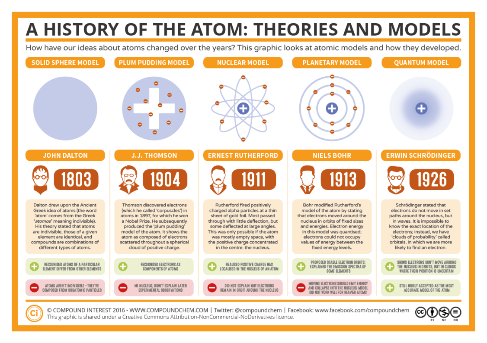

huge thanks to jonathan l for providing me with his notes :]
- research discrete thingy
suggested resources
- Pearson Chapter 2.1 to 2.3: Atomic theory, describing atoms, isotopes
- Lucarelli Chapter 2: Discovering the atom’s structure
- index.html (link broken)
research checklist
- The chronology of the discoveries by the scientists in question – how do they fit together to form a timeline?
- Specific experiments done by the scientists, and how outcomes of these experiments advanced our understanding of the structure of the atom.
- Major discoveries that were made, theories that were developed, and developments to atomic models that were proposed.
- Properties and locations of subatomic particles, and how we use the Periodic Table to establish numbers and arrangements of subatomic particles.
- Isotopes of elements, their similarities and differences in terms of atomic structure and physical and chemical properties.
Origins
- Idea of matter is thought by Ancient Greek philosophers
- They believed matter consisted of 4 elements, and matter was infinitely divisible.
- New greek guy came alone and disagreed, and described a particle called atomos which is not divisible
- Not challenged properly by the scientific community until late seventeenth century
Breakthroughs and Discoveries
- First evidence leading to discoveries began appearing very late in the 18th century.
- “Law of conservation of mass”, published by Antoine Laurent Lavoisier.
- He discovered there was no change in mass during a chemical reaction.
John Dalton 1803-1808
-
Came up with the Atomic Theory of Matter,
- which states that:
- Elements are composed of extremely small, indivisible particles called atoms.
- All Atoms of given element are identical having same size, mass and chemical properties. Atoms of different elements have different size, mass and chemical properties.
- Atoms are not created or destroyed during chemical reaction.
- A chemical reaction involves only separation, combination. Or rearrangement of atoms.
- Compounds are formed when atoms of more than one element combine in a specific ratio.
- Many of the atomic theory is wrong and disproven by modern atomic theory (1, 2, 5), but his original proposition granted a new perspective on atoms.
-
three laws (DO WE EVEN NEED TO KNOW THIS)
-
The law of definite proportions:
- mr dalton proposed “compounds are formed when atoms of more than one element combine in a specific ratio”
- this is true given our modern understanding of chemistry.
- e.g. calcium oxide will only occur with ca and o in fixed ratios
-
The law of conservation of mass
- mr dalton proposed “atoms are not created nor destroyed or changed into different types; a chemical reaction involves separation, combination or rearrangement of atoms.” thus there must be the same amount of atoms in the reactants of a chemical reaction as the atoms in the product.
-
The law of multiple proportions
- mr dalton proposed “whenever two elements form more than one compound, the different masses of one element that combines with a fixed mass of the ” WRONG WRONG WRONG WRONG THIS IS LIMITED AND DISPROVEN THROUGH POLYMERS (?) AND OLIGOMERS (?)
-
-
disadvantages of his theory:
- Atoms are divisible, they are made of smaller particles known as subatomic particles.
- Not all atoms for a given element are identical: some elements have atoms that differ in terms of mass and density (different number of neutrons). These are called isotopes.
- Elements are not in fact different in all aspects, eg argon calcium both have AMU of 40 (isobars)
- dalton claims elements combine in whole number ratio, which isn’t true in complex compounds
- allotropes contradict the statement elements of the same kind have same properties. e.g. charcoal, graphite, diamond.
- no suggestion to the structure of the atom
JJ Thomson 1897-1904
- Discovered the electron.
- cathode ray experiment
- in a sealed (evaporated) glass tube, metal terminals are placed at each end, acting as electrodes.
- invisible rays called cathode rays are produced from a cathode (negative terminal) towards the anode, which causes certain materials (called phosphors, such as neon) to glow.
- Thomson observed and concluded that cathode rays was a stream of negatively charged particles with mass, which became known as electrons.
- Passed through electric and magnetic fields:
- cathode rays passed straight through
- thus cathode rays are affected by electric and magnetic fields.
- the field deviates towards the positive plate.
- thus the ray is negatively charged
- diagram:

- cathode rays passed straight through
- Passed through electric and magnetic fields:
- He determined the mass of the particle to be ~1/2000 AMU since the magnitude of the fields is known.
- he realised that
- atoms contain negatively charged particles.
- he repeated the experiment with multiple types of materials in the cathode, but the beam is produced every time.
- since all atoms are neutral:
- atoms also must contain a positively charged particles.
- atoms contain negatively charged particles.
-
plum pudding model
- he knew atoms were neutral and contained negative charge.
- therefore they must contain equal positive charge.
- thomson suggested atom is comprised of electrons and protons spread with uniform mass and charge.
- weaknesses
- electrons is now known to be occupying fixed orbitals
- under the model, alpha particles would not be deflected against an element, and passes right through, which does not align with the results found in the gold leaf experiment.
- he knew atoms were neutral and contained negative charge.
Ernest Rutherford 1911
- alpha particles shoot at gold leaf (a thin sheet of gold a few atoms wide)
- sheet is surrounded by zinc sulfide
- alpha particles collide with zinc sulfide to make flashes of light and microscope is used to observe the impact position.
- observations:
- most alpha particles pass through gold foil
- this means that most of an element is empty space
- some alpha particles were deflected (in a minor way)
- the discovery of a neutral, the nucleus region in the atom.
- there must exist a positively charged region called a proton.
- this also means that the positively charged region is a small part of the atom.
- some alpha particles were deflected (significantly)
- reconfirms that protons must be concentrated at the centre of the atom (nucleus)
- expectations of the atom was that
- the alpha particles pass through the atom or none passes through, but instead some were deflected.
- most alpha particles pass through gold foil
-
rutherfords model
- atom comprises of mostly empty space. the space is occupied by electrons.
- electron orbits a small central region (0.05%)
Niels Bohr 1913
- Orbitals of electrons, and the line emission spectra.
- Scientists found that when an electric discharge is passed throguh a discharge tube containing hydrogen gas at low pressure, it emits light.
- The light when passed through a prism split sup into a set of 5 lines. This spectrum is called the line spectrum of hydrogen. This is known as the line emission spectrum. Scientists were unable to explain this.
-
bohr’s model
- bohr’s model stated the following: (the three postulates)
- fixed orbital: electrons move in a circular orbit around the nucleus under influence of electrostatic attraction of the nucleus.
- angular momentum is quantised
- electrons occupy fixed energy levels
- these fixed energy levels do not emit radiation, as these orbits are stable (see Maxwell’s Law)
- energy transitions: electrons can transition to higher or lower energy levels by emitting or absorbing fixed quantities of energy (photons)
- an electron can transition to a higher state by absorbing a photo with energy equal to the exact difference in energies between 2 electron orbits (final and initial)
- an electron can transition to a lower state by emitting a photo with energy equal to the exact difference in energies between 2 electron orbits (final and initial)
-
emission spectra
- when an electric discharge is passed through a discharge tube, electrons that are found in the discharge transfer some kinetic energy during collision to the atoms’ electrons.
- the electron issued the atom is then excited to a higher energy state, and the incident electron will decelerate and be deflected in another direction (?)
- electrons become unstable in higher energy state, and will transition down to the ground state.
- this releases energy in the form of radiation, the energy is equal to E2-E1.
- frequency of the radiation (therefore colour) is proportional to the energy it has, one specific wavelength/frequency of light will be produced per transition.
- a unique set of photons with a specific wavelength is produced (as multiple transitions can occur within an atom). when these emissions are captured and analysed in a line spectrometer, you can only see one light present.
- unique spectra: discrete energy levels for atoms are fixed and unique/atom.
- as a result the discrete energy level differences are also fixed and unique to each element.
- each element has difference emission and absorption spectra as the range frequencies of light emitted are based on the discrete energy level differences.
- electrons are quantised (only specific/discrete values are allowed), as in they cannot be between electron energy shells.
- the electrons are bumped up/down by absorbing or emitting photon energy.
-
problems with bohrs model
- multi-electron atoms
- does not work with atoms with 1+ electrons in the valence shell, as it’s not possible to calculate all the spectral lines of all other atoms, as this model has classical components (electrostatic attraction)
- relative intensities of spectral lines
- the spectral lines are not of equal density
- bohrs model doesn’t explain why some electron transition would be favoured, and wavelength of light appears more intense in the spectra.
- hyperfine lines
- 2 bands contained in a single band
- zeeman effect
- when a gas is excited in a magnetic field, emission spectrum shows a splitting of the spectral lines.
- multi-electron atoms
James Chadwick 1932
- discovered the neutron
- determined protons made only 1/2 the mass of the atom when he analysed Rutherford’s experimental data; specifically the extent and frequency of alpha particle defllection.
- Thus he believed there was a hidden component of the atom that constituted its remaining mass (50%)
-
Experiment
- in 1932, he discovered that beryllium when bombarded with alpha particles emitted a very energetic stream of radiation, originally thought to be gamma.
- the properties did not align with gamma rays. it was penetrating alike gamma rays, and it was not deflected upon passing through a magnetic field, therefore it was neutral.
- radiation when collided with paraffin
Development of atomic structure
Atomic theory, ancient greeks thought everything was made of a solid matter which cannot be broken down even more
John dalton proposed atoms as solid spheres, and there exists different types of spheres for different elements.
JJ Thompson plum pudding model - showed that there exists electrons (negatively charged particles) inside the atom
Ernest Rutherford nuclear model, discovered the nucleus, and assumed negative charge surrounds it through the gold leaf experiment, some alpha particles were deflected. Flaw was electron rush into nucleus causing it to collapse
Niels Bohr proposed electron orbit and energy levels of electrons.
Ground state blah blah blah
tl:dr
lazy fuck
- john dalton 1803
- atomic theory of matter
- said a lot of wrong shit, but was fundamental to modern atomic theory
- said
- everything is made up of undivisible particles called atoms
- atoms of different elements have different physical/chemical properties
- atoms of the same elements has the same physical/chemical properties e.g. size n stuff
- atoms cannot be created or destroyed
- therefore in a equation the reactants must equal the products
- A chemical reaction involves only separation, combination. Or rearrangement of atoms.
- there exists compounds, which is atoms but in a specific ratio.
- jj thomson 1904
- discovered electrons
- cathode ray tube experiment
- partially evacuated tube
- cathode and anode on each side
- the tube produces cathode rays (electrons)
- jj thomson discovered that positive magnetic and electric forces deviated the cathode ray towards it. (deflects towards the positive plate)
- this is because negative particles are attracted to positive plate.
- jj thomson observed this and concluded that negatively charged. particles must exist in an atom (a positively charged “soup”)
- the experiment was done with cathodes made of multiple materials.
- ernest rutherford 1911
- discovered nucleus
- gold leaf experiment
- bombarded thin gold leaf (gold because it is malleable) with hella alpha particles (because alpha particles are positively charged)
- the gold leaf is surrounded by zinc sulfide screen (cos the screen glows when alpha particles strike it)
- the alpha particles mostly passed through the leaf, but some were deflected (minorly and majorly)
- this led rutherford to conclude there is a concentrated area of the atom where the mass is.
- niels bohr 1913
- bohr modified rutherfords model
- he stated electrons moved around the nucleus in orbits.
- and electron energy is quantised (electrons are found in discrete energy levels)
- electrons could not occupy transitional states (between energy levels)
- james chadwick 1932
- discovered the neutron
- polonium source produced alpha particles bombarding beryllium, which produced an intense radiation.
- the particles were about the same mass as the proton.

related: